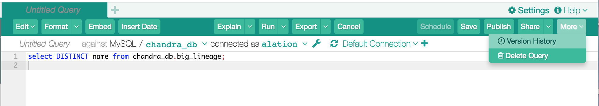
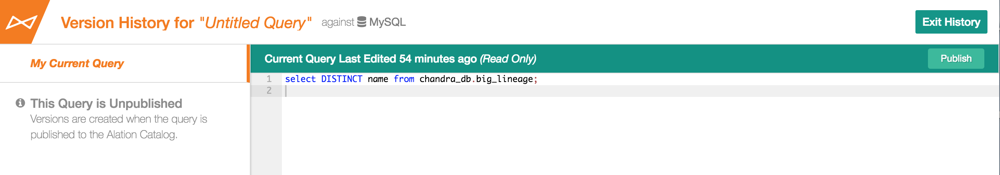
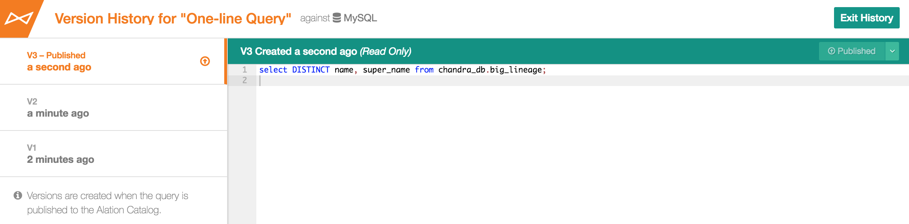
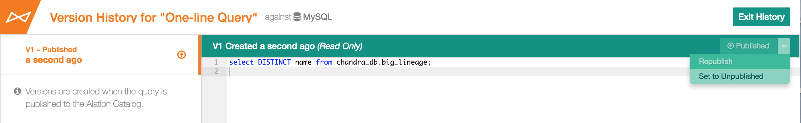
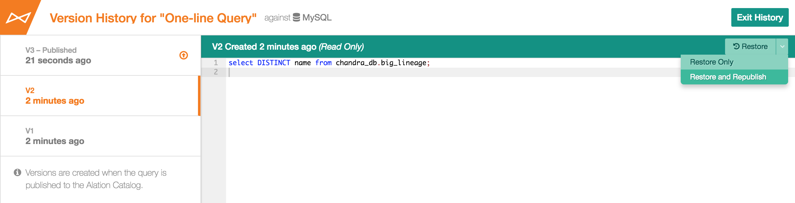

Query Version History¶
Alation Cloud Service Applies to Alation Cloud Service instances of Alation
Customer Managed Applies to customer-managed instances of Alation
Applies from version V R4 (5.8.x)
Every time you publish or republish a query, Alation captures a historical version of this query and stores it in the Query Version History that is available in Compose.
Note
Publishing a query is an action that makes this query accessible to users who search for queries using the Published filter. Both unpublished and published queries can be found and viewed by Alation users, so publishing in Alation does not signify “moving from private use to public use”. Publishing your query means you want it to be promoted to the Published filter in the catalog, so that other users may know that it is a completed, working, and trustworthy query.
Viewing Query Version History¶
To view Version History for a query,
Sign-in to Alation and open a query in Compose.
In the upper right-hand corner, click More and in the menu that opens, click Version History. The Version History viewer will open. It lists all existing versions of the query in a panel on the left, newest on top. If a query has not been published before, History will only include one item equal to the current unpublished query.
Select a version you want to view by clicking its title. The SQL body of the version will open in the preview area on the right. Versions are read-only at this time.
To exit the Version History viewer, click Exit History in the upper right-hand corner of the screen.
Version History under More in Compose:
Initial Version History - New Query:
Viewing Version History:
Working with Query Versions¶
We are designing toward multi-user query collaboration, but at this time, only query authors can take actions on a query from the Version History viewer. The actions available to query authors are:
Publishing
Republishing
Unpublishing a version
Restoring an older version
Query viewers have read-only access to versions.
Publishing¶
Publishing is available for new unpublished queries and for previously unpublished queries. It creates a version that will be stored in Version History. For example, publishing a new query for the first time will capture its first version; and publishing a currently unpublished query that has already been published before will create its next version in the History.
All published queries are filtered into the Publish Status filter in Alation Search. For details on searching and filtering, refer to Search.
Republishing¶
Republishing is available for published queries, which are edited. Republishing incorporates the new unpublished changes into the next published version of the query and captures this latest version in Version History.
Unpublishing¶
Unpublishing can be applied to currently published queries. It makes the query unavailable through the Published filter in Query Search. In History, it removes the Published label from the latest version.
Restoring¶
Restoring creates a new unpublished version from an older published version. By restoring an older version, you will lose the latest unpublished changes to the query if there were any before you restored.
Important
Applies to V R5 (5.9.x)
If your query is published and scheduled, and you change it by restoring from an older version, in V R5 this action will un-publish and un-schedule this query.
also see details on changes to publishing and scheduling in V R5:
Publishing and Republishing Using Version History¶
(Re)publishing is available in both Compose query editor and Version History viewer. For (re)publishing in Compose, see What Happens When I Publish a Query ?
To publish your query from its Version History,
In Compose, create a new query or open your existing unpublished query.
In the upper right-hand corner, click More and in the menu that opens, click Version History. The Version History viewer will open. The first item in the list of versions is your unpublished active query.
In the upper right-hand corner, click Publish to publish your query. A newly published version of the query will be created.
Note
There can only be one currently published version of a query. Every time a query is changed and republished, a newly published version is created, while the older version loses the label Published and moves down in the list of versions.
If you are updating a previously published query, you can follow the same steps to re-publish the changes. Re-publishing the query will also create a newly published version that will incorporate all the new edits.
Republishing using Version History:
Unpublishing Using Version History¶
From Version History, you can unpublish the latest published version of a query. To unpublish,
In Compose, open Version History for your existing published query. The top item in the list of versions will be this active published version.
In the upper right-hand corner, click the dropdown next to Published and in the menu that opens, click Set to Unpublished. The latest published version of the query will be unpublished, which makes the query unavailable through the Published filter in Query Search. It will move down in the list of history versions, and a new unpublished active editable version will be created. It is identical to its parent version until you change it. The previously published version will stay in History and will be available for restoring.
Restoring an Older Version¶
If necessary, you can restore an older version of your query as your latest active editable version. To restore a version,
In Compose, open Version History for your existing saved query. It can be both published or unpublished.
In the list of versions on the left, find and click the version you would like to restore. It will open in the right-hand preview panel.
In the upper right corner, click Restore and in the menu that opens, click:
Restore Only to restore the version without publishing. With this option, there will be no newly published version of the query in the catalog after you restore.
Restore and Republish to restore and republish the new version from the older one. The restored version will be the currently active published version of the query.
Confirm restoring. This creates a new active version that is identical to the older version that was restored.
Note
Every time you restore, Alation creates a new version from the older version that is being restored. This older version still stays in the History for reference.
Restoring:
